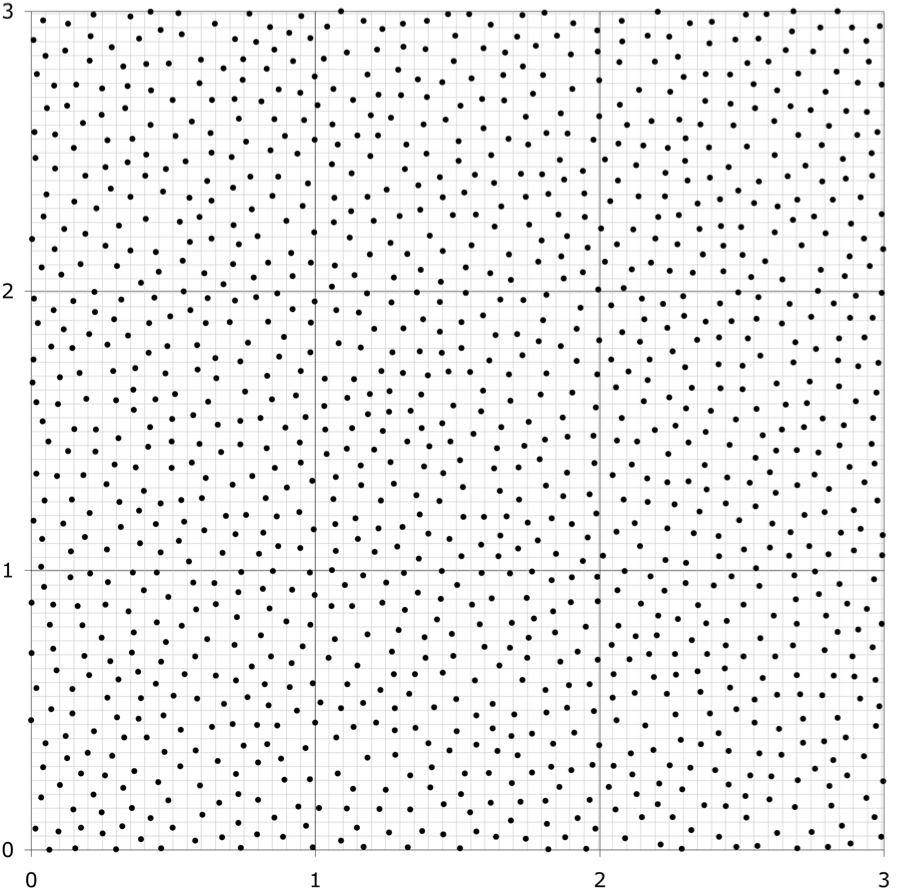
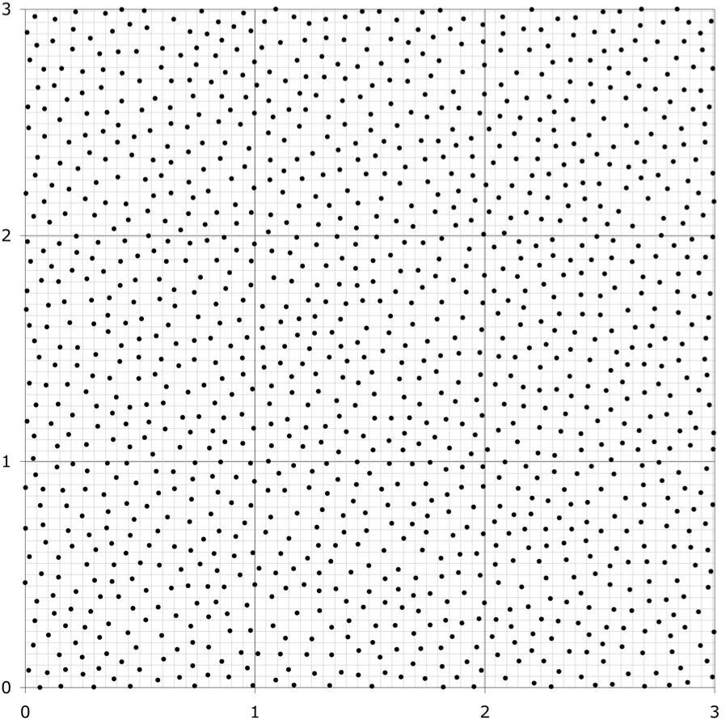
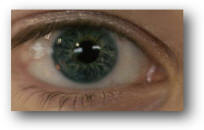
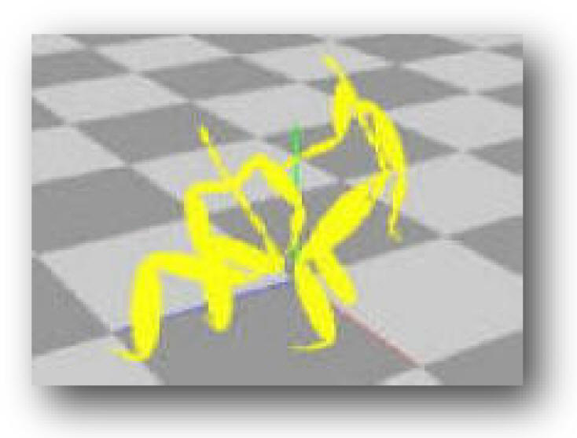
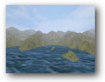

Yuting Ye
yuting at cc.gatech.edu
Ph.D.
Computer Graphics Group
College of Computing
Georgia Institute of Technology
Ph.D.
Computer Graphics Group
College of Computing
Georgia Institute of Technology
 



A Momentum-based Bipedal Balance Controller
Yuting Ye
Master's project, University of Virginia, 2006
Presentation (.ppt, 1.09M) Video (.zip, 3.4M)

Intro Graphics Projects
University of Virginia, 2004
Image processing, raytracer, Rubik's cube, NPR
Projects

Computer Animation Projects
University of Virginia, 2005
Particle system, rigid body simulation, inverse kinematics, motion capture, PD controllers
Projects
University of Virginia, 2005
Particle system, rigid body simulation, inverse kinematics, motion capture, PD controllers
Projects

An Interactive 2D Vector Graphics Editing System
Yuting Ye
Undergraduate thesis, Peking University, 2004
Source code (.rar, 576K)

View-dependent Real-time Terrain Rendering Using Static LOD
Yuting Ye, Guoping Wang
Accepted to Intl CAD'04 Presentation
Source code (.rar, 3.1M) Paper